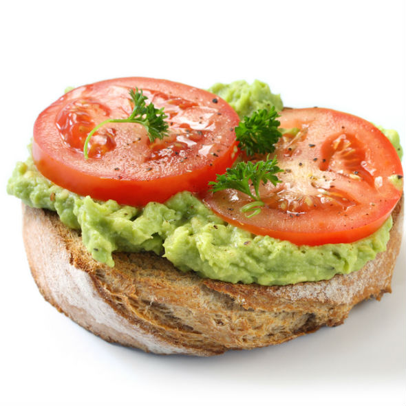
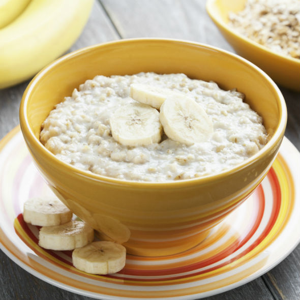
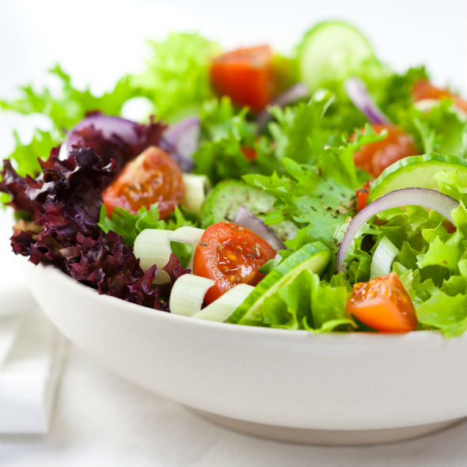
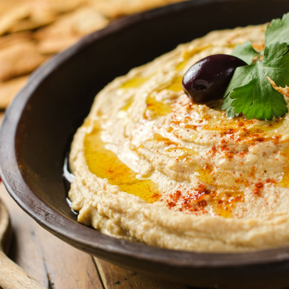
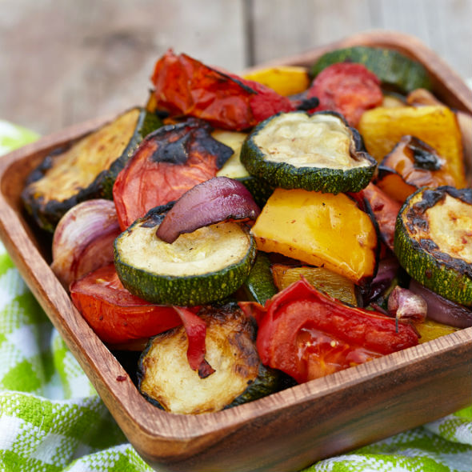
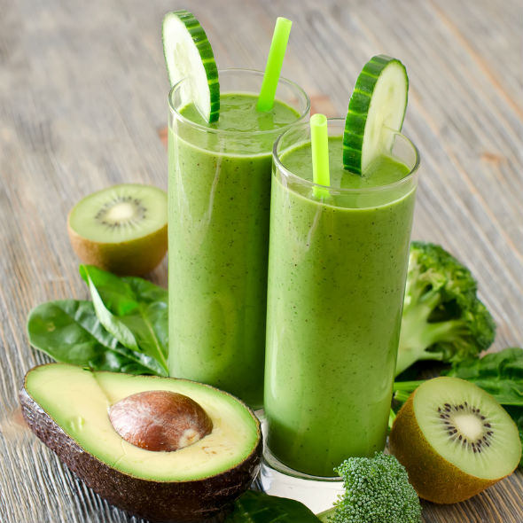
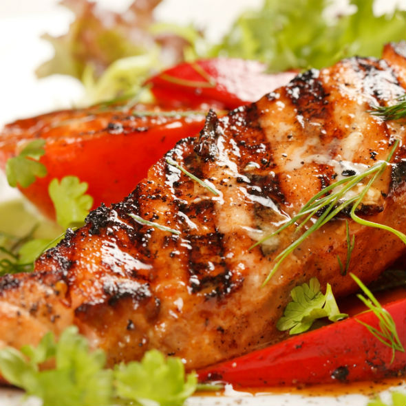
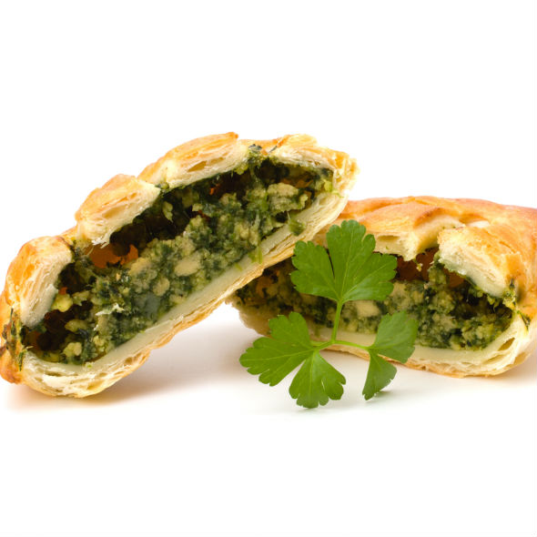
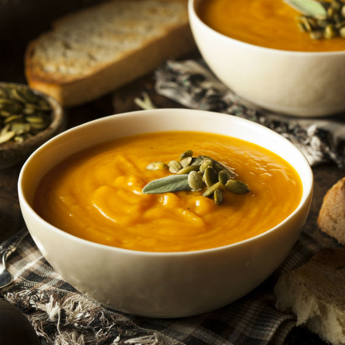
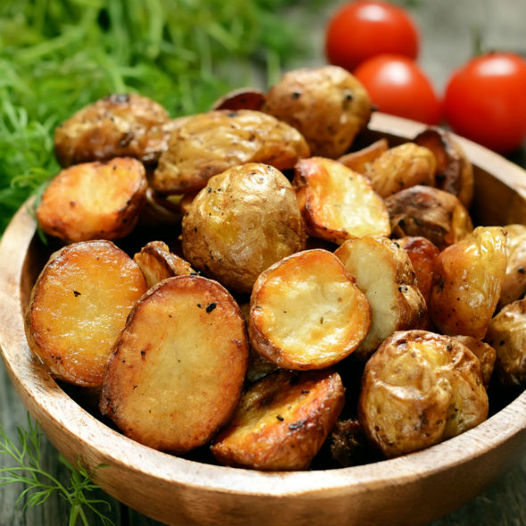

De-a lungul timpului ne-am format obiceiuri mai putin sanatoase doar ca sa ne facem placerea de a manca ceva gustos. Desi este esential ca gustul sa ne satisfaca placerile culinare, trebuie sa ne amintim ca sanatatea noastra depinde de alimentele pe care le consumam. Intr-adevar, este greu sa renuntam la mancarea nesanatoasa dar cu vointa si perseverenta necesara ne putem schimba stilul de viata. Iti propunem sa incerci urmatoarele retete care te ajuta sa-ti mentii organismul sanatos dar si sa economisesti timp.
1.Toast cu avocado cremos Toastul cu avocado este ideal pentru diminetile in care te grabesti intrucat se gateste foarte repede si este cu adevarat un preparat sanatos. Tot ce trebuie sa faci este sa cureti un avocado de coaja, dupa care il zdrobesti intr-un vas. Prajesti apoi feliile de paine in toaster si intinzi pe ele stratul de avocado la care poti adauga deasupra piper negru si zeama de lamaie.
2. Fulgi de ovaz cu lapte In cazul in care vrei sa te incalzesti mancand ceva fierbinte si sanatos, iti amintim ca fulgii de ovaz cu lapte sunt o solutie delicioasa pentru zilele reci de iarna. Pe langa faptul ca reduce nivelul de colesterol, ovazul poate si intari sistemul imunitar. Trebuie doar sa fierbi laptele intr-o oala pe care il adaugi apoi la bolul cu fulgi de ovaz in care poti pune si fructe uscate.
3. Salata mixta Salata verde este cunoscuta ca fiind unul dintre cele mai sanatoase alimente care te revigoreaza, curatindu-ti organismul. La salata poti adauga cat mai multe legume dar si carne sau oua pentru a-ti asigura necesarul de proteine. La sfarsit trebuie sa pregatesti sosul minune care ii va da salatei un gust delicios. Pentru sos ai nevoie de putin ulei de masline, otet si piper. Pentru un plus de savoare poti adauga seminte de quinoa sau de dovleac.
4. Humus Pentru aceasta reteta ai nevoie de naut, suc de lamaie, ulei de masline si usturoi. Mai intai fierbi nautul bine pana cand acesta se inmoaie si poate fi pasat cu blenderul. Dupa ce ai mixat nautul si ai obtinut o compozitie la fel de cremoasa ca smantana adaugi usturoiul pisat si sucul de lamaie, amestecand incontinuu. La sfarsit poti sa pui si putin ulei de masline deasupra si e gata!
5. Legume coapte si crocante Pe langa beneficiile pe care le aduc organismului tau, legumele la cuptor se fac imediat si sunt si bune la gust. Ciupercile, morcovii, cartofii si broccoli: iata o combinatie cu adevarat delicioasa. Dupa ce cureti bine legumele le tai in bucatele, avand grija sa nu fie prea mici. Urmeaza sa le pui in tava pe o foaie de copt. Poti adauga si putin ulei de masline deasupra pentru a da un gust si mai bun legumelor.
6. Smoothie verde In cazul in care vrei sa prepari un smoothie verde care sa iti curate organismul de toxine, poti alege dintr-o gama larga de fructe si legume printre care se numara si spanacul, broccoli, varza, avocado, kiwi si salata. Trebuie sa tai bucatele legumele si fructele, punandu-le apoi intr-un blender. Desi nu pare prea gustosoasa combinatia, efectul sau asupra sanatatii tale se va vedea in urma consumului constant de acest preparat.
7. Peste la cuptor Pestele la cuptor poate inlocui cu usurinta carnea de pui, de porc sau de vita, fiind bogat in proteine dar si in vitamina D si seleniu. Consumul de peste poate aduce diverse beneficii precum prevenirea bolilor de inima. Pentru ca nu orice peste poate fi preparat la cuptor, noi iti recomandam sa folosesti ca ingredient de baza pastravul proaspat. Cureti mai intai pestele de solzi, il speli, il tai si apoi pui sare pe el dupa care il pui intr-o tava in care aranjezi legume taiate in bucatele. Lasi tava in cuptor maxim o ora jumate.
8. Placinta cu spanac Primul pas pe care trebuie sa il faci ca sa prepari aceasta placinta este sa oparesti spanacul, lasandu-l mai apoi la scurs. Tai ceapa in bucatele, dupa care o calesti in ulei, adaugand-o la spanac. Adaugi la compozitia obtinuta branza, piper, marar si un ou. Dupa ce ai lasat la dospit aluatul framantat, il imparti in doua bucati. O foaie de aluat trebuie intinsa pe fundul unei tavi peste care se adauga amestecul de spanac, iar deasupra se pune cea de-a doua foaie.
9. Supa crema de dovleac Tai in bucatele dovleacul curatat de coaja si de samburi, dupa care il pui intr-o tigaie impreuna cu cartofii si cu morcovii taiati marunt, lasand legumele sa se caleasca. Lasi la fiert intr-o oala apa, la care adaugi dupa ce aceasta a fiert bucatelele de legume, sarea si piperul. Compozitia trebuie lasata pe foc timp de 30-40 de minute. La sfarsit pui amestecul obtinut intr-un blender, apoi il lasi iar pe foc cateva minute. Afla mai multe despre reteta de supa crema de dovleac.
10. Cartofi in vin Poti uita de friptura intrucat aceasta reteta te va suprinde placut cu gustul delicios pe care il ofera vinul cartofilor simpli. Ca sa obtii un preparat desavarsit trebuie sa tai in bucati mari cartofii, punandu-i apoi intr-o oala in care torni vin si apa. Adaugi apoi putina sare si piper si lasi cartofii pe foc aproximativ o ora, avand grija ca acestia sa nu se inmoaie prea tare.